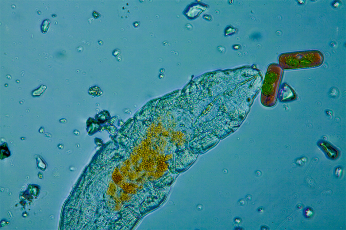
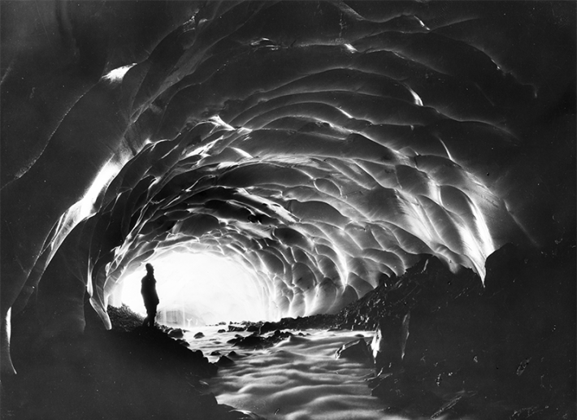
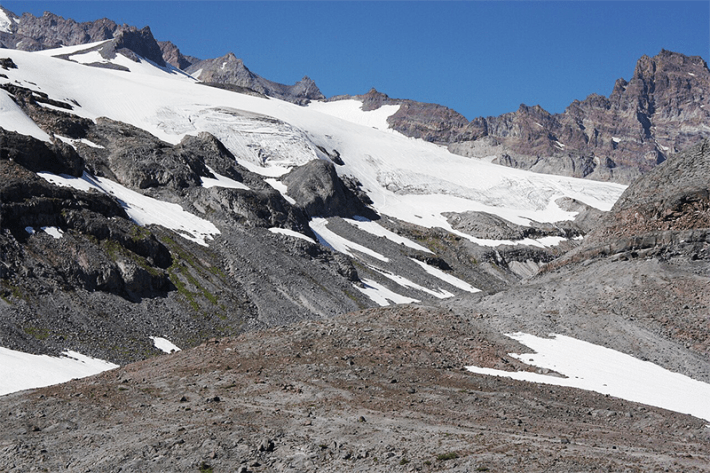

Washington State’s Mount Rainier is one of the snowiest mountains in the world. Over the years, all of that snow has birthed dozens of living glaciers, which flow across the landscape. One such resident, the Paradise Glacier, drapes onto one side of the mountain at more than 8,400 feet above sea level. It cascades over the peak with a thick icy sheen. Here, the air is crisp and quiet.
Paradise Glacier is smaller than many of its majestic, icy neighbors—it is meek, now covering less than a quarter of a square mile. But, says Scott Hotaling, a professor of watershed sciences at Utah State University who has spent more than 500 hours roaming the glacier, even small mountain glaciers don’t feel so small when you’re on them.
Nautilus premium members can listen to this story, ad-free.
Nautilus members can listen to this story.
“You can stand on one side of it and you can’t see where it ends on the other side,” he says of Paradise. While on the glacier, in what might seem to many people a barren environment of rock, snow, and ice, Hotaling says he can feel the abundance of life pulsing below him. He can feel its precise layers and intertwined stories.
They emerge by the billions. Protruding out of the snow like hair growing out of a scalp.
“These glaciers are actually way more diverse than anyone realizes,” he adds. Microbes adapted to life at the extreme, hardy tardigrades, and mysterious ice worms that crawl to the surface only under the cover of night, blooms of algae as bright red as blood, and even roving wolverines, all depend on this glacier. And as Hotaling and other glacial ecologists are finding, science is just scratching the surface of life in this one well studied glacier: Melting down a small bit of glacial ice here can reveal genetic traces from every domain of life. To say nothing of the many lesser-studied glaciers around the globe.
“It’s a wild place,” says Hotaling, who has spent years studying Paradise’s hidden ecosystems. But as the glacier—and so many others—are at risk of imminent death by global warming, he and his colleagues worry we’re losing more life than we can fathom.
The story of life in a glacier can be told from the bottom up.
Where the glacier meets the bedrock, the subglacial zone, is among the most exotic. Because this part of the glacier has very little oxygen and—being up to 100 feet under ice—receives very little light, it is rife with microbes that have adapted to extreme conditions on Earth.1 Here, chemolithoautotrophic bacteria harvest their energy from breaking down iron and sulfur in the weathering bedrock below. Methanogens and methanotrophs feed off methane when there is no oxygen around them. Other microbes decompose ancient organic carbon found in the rock. Nutrients and flecks of carbon make their way to the bottom through slivers of meltwater seeping through fissures in the ice; sometimes they puddle in small lakes of freshwater, locked inside the glacier. And Hotaling notes they are only just starting to learn about the many wild lifeforms eking out an existence in this obscured niche—with more new interactions being discovered every time scientists are able to look. “There’s just a lot of really kind of crazy stuff that happens down there,” he says.

LIFE ON ICE: Notoriously hardy tardigrades—who can survive conditions even in outer space—make a living in the glacial ice on Paradise, feeding on algae and other scarce victuals scavenged in the harsh realm. Credit: Tobetv / Shutterstock.
Above this zone sits a thick layer of ice, from 30 to nearly 100 feet, known as the glacial zone. Pockets of life may accumulate in splinters and cracks in the ice. Surviving here, inside the pressurized freeze, is challenging. “This area is dark. It has very few nutrients. It’s very cold,” says Hotaling.
But, ascending through the ice, the hot spot of activity on a glacier is a lot like where life is most abundant in the ocean: The top 2 inches of the glacier appears to be where the majority of its biological activity occurs. This area is covered in snow for part of the year, during the winter. And in warmer seasons, it is an area where the glacier’s ice is exposed. Hotaling and colleagues sampled clumps of snow from the top of Paradise Glacier in 21 different spots over 5 months and found more than 4,700 types of bacteria and more than 3,000 types of fungi.2
“The different domains of life are all represented,” says Daniel Shain, a zoologist from Rutgers University who has studied microbes in Paradise Glacier with Hotaling for several years. Shain does something called a metagenome analysis of glaciers: He takes samples of glacial ice, melts them, extracts their environmental DNA, sequences it to figure out what’s there, and uses that data to model how glacier-bound organisms thrive in such a harsh environment. While he has yet to do a metagenomic analysis of Paradise, he has dived into that of similar glaciers in Alaska. What the findings suggest is that organisms that live in and on the top layers of ice and snow seem to have figured out a way to make more energy with fewer resources, compared to typical, terrestrial soil organisms.3
The top inches of the glacier are also home to reddish and blood orange colored, cold-loving snow algae, Sanguina algae, which create what hikers often call “watermelon snow.” During the winter months, when snow is thick and light is sparse, these algae species lie dormant inside the snowpack as cysts buried up to some 10 inches deep. But during spring and early summer, the cysts germinate, and the algae migrate to the surface of the soft snow, where they bask in the sun, accumulating red carotenoids like we accumulate melanin in our skin, to protect their cells from UV and heat. Given their deep color, the algae also darken the surface and increase the rate at which ice on the glacier melts by as much as 20 percent. This produces little dips in the glacier—like little dimples in its face—where bacteria and other microorganisms can make a better living, in turn, helping to keep the water from freezing again with the energy they produce through their metabolism.
Like grass in a pastureland, the algae feed miniscule grazing animals on top of the glacier, whether it is ice or snow, including rotifers, arthropods called springtails, and tardigrades—the chubby, gummy-bear looking animals known for their astounding ability to thrive in extreme conditions (including outer space). These and other hardy microinvertebrates, no larger than about 0.02 inches long, contribute to much of the nutrient cycling and decomposition that occurs on the snowfield overlaying glaciers. (Even if it is orders of magnitude lower than the nutrient cycling that happens among grassland, for instance.)
Glacial ice can reveal genetic traces from every domain of life.
But in Paradise Glacier, these critters are less abundant—and much more difficult to find, says Shain—than in many other glaciers around the world. That’s because they face competition from one of the most bizarre of the glacier’s residents: ice worms.
After living in the deep darkness of the ice through much of the year, as spring rolls around, every afternoon, as soon as the sun starts to set, half-inch-long ice worms make their way out of the ice and through the snow. The threadlike worms wriggle upward and migrate to the surface: They emerge by the billions. Protruding out of the snow like hair growing out of a scalp. Not much is known about them—what they do during the winter, how they survive in the ice despite not being able to withstand temperatures below freezing, or why they come out just at night. But Shain’s work has found that, like glacial microbes, ice worms are also exceptional at creating energy inside their cells.
“That helps to explain why ice worms are the only macroscopic organism that lives on ice,” says Shain. “Everything else is really, really small. Ice worms are a big outlier.” (Another strange ice worm fact is that they have also evolved to be “one of the most UV-resistant organisms that we know of,” says Shain, perhaps to make do as light-absorbingly dark creatures living so close to the sun; though their nocturnal habits raise still more questions about this adaptation.)

VANISHED CAVES: Paradise Glacier once held enormous ice caves—which were popular attractions for hikers and tourists, such as this person photographed in one of the glacier's caves in 1923. In the past few decades, the last of the caves have melted away. Credit: Lawrence Denny Lindsley / Wikimedia Commons.
On the surface of the glacier, together with ice worms, insects called ice crawlers roam over from their terrestrial hiding places at the edges of the glacier. Known to science as grylloblattids, the inch-long insects with cockroach faces and no wings scavenge on the glacier’s surface, picking up any nutrient-rich debris that’s been blown there by the wind: dust, pollen, ash from wildfires, smaller organisms, and other insects blown in by too strong a gust and marooned on ice.
Birds from above, in turn, fly onto the ice, plucking ice crawlers and ice worms out of the snow and into their hungry bills.4 Songbirds, including the great crowned rosy finch, perch on the soft snow, together with mountain bluebirds, ravens, white tailed ptarmigans, American kestrels, horned larks, and American pipits.
But, as a small bird, a glacier is a dangerous place to forage, says Hotaling. A dark-backed bird loitering on a widespread white surface is an easy target for a bird of prey, and raptors and hawks are known to patrol glaciers, swooping down and snatching songbirds off the peaceful snow. In fact, Hotaling has noticed that, when foraging, songbirds like the rosy finches tend to stay near the margins of the ice, likely so they can easily get onto the rocks where there are places to hide if a hunting raptor dives.
Bigger animals, including mountain goats, hoary marmots, Cascade red foxes, or even wolverines, lie down to rest on the glacier’s ice to cool down from the beating summer sun, and use the snowpack to travel from one side of the mountain to another. In summer 2021, Hotaling put camera traps all over the glacier and captured photographs of the first family of wolverines on the glacier in that area in more than 100 years.5

THE LAST OF PARADISE: Paradise Glacier is about 12 percent of the size it was when it was mapped in 1913. One expert expects the last bits of this glacier will vanish by 2040. Credit: Walter Siegmund / Wikimedia Commons.
The glacier supports life downstream, too. As the snow and ice thaw, meltwater from Paradise Glacier births the eponymous Paradise River. Here, where the ice becomes water just above 39 degrees Fahrenheit, life changes radically.
In the coldest first reaches of the seasonal melt, the melting ice brings dissolved organic carbon, which, activated by sunlight, clings in a nutritious biofilm on top of the bedrock: It feeds the largest animals found here, such as aquatic insects, black fly larvae, and stone flies, including a rare species known as the northern forestfly. Slightly farther downstream, life gets bigger, large fish appear, including various salmon species, the endangered bull trout and cutthroat trout, sculpins, and whitefish.
Humans, too, rely on Paradise Glacier. The glacier’s meltwater provides irrigation for agriculture downstream, drinking water to nearby communities, and it eventually feeds into hydropower plants such as the Alder Dam farther down on the Nisqually River. And hikers and mountaineers make their way up the river and onto the snow for scientific research, for recreation and sport, or for artistic inspiration.
The Mount Rainier landscape has hosted the Cowlitz, Muckleshoot, Nisqually, Puyallup, Squaxin Island, Yakama, and Coast Salish people for millennia. Archeological artifacts suggest that—while the mountain was fully covered in ice and snow up until about 9,000 years ago—ancestors of these tribes were foraging, hunting, and gathering on the slopes as soon as the first plants and trees sprang up. Records suggest they’d collect huckleberries or hunt mountain goats and gather cedar bark to make baskets and hats.
By the late 1700s, European and American visitors became captivated by the landscape of the mountain and its glaciers, too.
“Of all the fire mountains which like beacons; once blazed along the Pacific Coast, Mount. Rainier is the noblest,” wrote the Scottish-American writer and conservationist John Muir, who climbed the mountain in 1888.
Yet, the noble mountain is losing its blaze.
Paradise Glacier, for one, is dying.
“When you have a big ice cave, you’re in the heart of the glacier, and it means the heart is no longer beating.”
“Right now, it’s about 12 percent of the size that it was in 1913 when it was mapped,” says Mauri Pelto, director of the North Cascades Glacier Climate Project at Nichols College, of the glacier.
The first time he visited Paradise, in 1985, Pelto stepped inside its large, long-famous ice caves, which had been a draw for tourists since at least the early 1920s, when people could access part of the then-massive glacier more easily from roads. While mesmerizing, the ice caves were already a sign of the glacier’s decay. “When you have a big ice cave, you’re in the heart of the glacier, and it means the heart is no longer beating,” says Pelto, quoting his daughter, with whom he’s hiked up to the glacier several times. “Because if a glacier is moving and alive, it won’t allow a big cavity like that to form.” Shortly after Pelto’s first visits, in the late ’80s, that lower part of Paradise Glacier melted away and was proclaimed dead—the upper part of Paradise Glacier is all that’s left now.
“Paradise is just following the path of the Stevens Glacier, the Van Trump Glacier, and the Pyramid Glacier; they are all gone now,” says Pelto of the other glaciers that once adorned Mount Rainier. At the rate it is melting, Pelto speculates, we’ll bid goodbye to the Paradise Glacier—and all of the life inside and on it, discovered and not—within 15 years.
As the glacier rapidly dies, late in the summer, when the climate is dry and warm, it is also already producing 80 percent less runoff than it used to, says Pelto. This means the streams it feeds may become depleted and see their temperature increase rapidly, affecting the life of all of the aquatic invertebrates that have adapted over millennia to the frigid waters, and all of the fish swimming, feeding, and reproducing in the rivers below.
There may be some unlikely survivors, though. Shain, for instance, has a hunch that, despite their name, the ice worms may be best poised to weather the heat.
Geological data suggest that the Pacific Northwest has experienced multiple warm periods over the past several million years, with temperatures getting even a few degrees warmer than the area is experiencing now, and the glaciers fully melting. Yet genetic data Shain's collected suggests ice worms may have been around in that part of North America for millions of years, meaning that they somehow survived those warmer eras.6 The worms cannot migrate long distances, so they cannot have come from very far.
Maybe even in the direst of warming scenarios, there will be pockets of ice that persist, where the creatures of the glacier can find refuge throughout the decades, says Shain. Given how little we know about ice worms—and how little we know, to be honest, about so much of life in glaciers—maybe there is also a silver lining in our ignorance: potential to be surprised. 
References
-
Hotaling, S., Hood, E., & Hamilton, T.L. Microbial ecology of mountain glacier ecosystems: Biodiversity, ecological connection, and implications of a warming climate. Environmental Microbiology 19, 2935-2948 (2017).
-
Hotaling, S., Price, T.L., & Hamilton, T.L. Summer dynamics of microbial diversity on a mountain glacier. mSphere 7, e0050322 (2022).
-
Napolitano, M.J. & Shain, D.H. Four kingdoms on glacier ice: Convergent energetic processes boost energy levels as temperatures fall. Proceedings of the Royal Society B 271, S273-273 (2004).
-
Hotaling, S., Wimberger, P.H., Kelley, J.L., & Watts, H.E. Macroinvertebrates on glaciers: A key resource for terrestrial food webs? Ecology 101, e02947 (2020).
-
Hotaling, S., et al. Human and wildlife use of mountain glacier habitat in Western North America. Northwest Science 97, 1-2 (2024).
-
Dial, C.R., et al. Historical biogeography of the North American glacier ice worm, Mesenchytraeus solifugus (Annelida: Oligochaeta: Enchytraediae). Molecular Phylogenetics and Evolution 63, 577-584 (2012).
Lead image: Bill Perry / Shutterstock